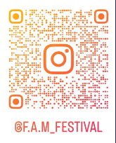

Famille, art, musique - Festival pluridisciplinaire et intergénérationnel
Date : Samedi 12 septembre 2026
Lieu : Chaud Bouillon - Lille Fives
Accessible à tous, entrée gratuite sur inscription.
Lieu intérieur avec stands de restauration et espaces de détente.
Facile d'accès, lieu convivial pour toute la famille.
